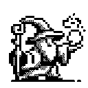

The evolution of a process is directed by a pattern of rules called a program. People create programs to direct processes. In effect, we conjure the spirits of the computer with our spells.
Abelson & Sussman, SICP, 1996
mike's website
Hello, my name is mike sutherland. You're on my website it's named mike suther.land, after me. I really like computers. Computers are my passion in life.
I currently work primarily in embedded C. I get paid to do that. However, I am very excited about Rust. And I do some full-stack ish stuff on the side. Web Apps, Desktop Apps, stuff like that.
I also like to write. I started really getting serious about writing in 2023.
writes
Here is a list of my writes. A write is a thing I (never a machine!) have written. I hope you enjoy reading some of my writes:
- 2023 novread the datasheet